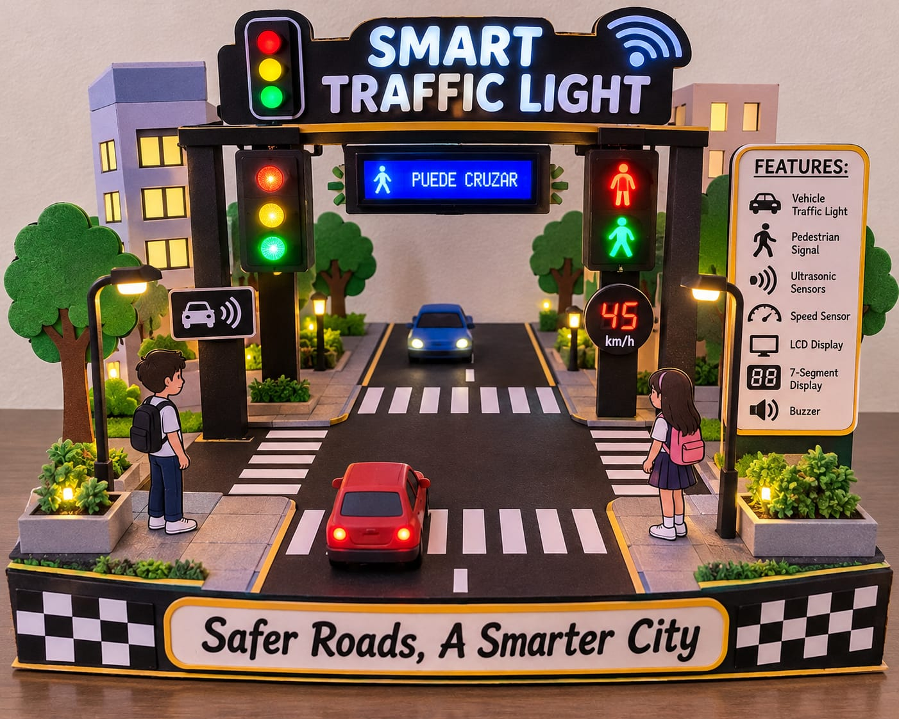

Fase—
Sensor peatón—
Sensor vehículo—
Velocidad vehículo—
Cruces0
Probar en la simulación
El peatón se para frente al sensor y pide paso solo. Si hay un auto en el cruce, espera a que pase. El "auto que no frena" llega rápido con la luz en rojo para probar la alerta.
Bitácora
Hardware
AUTOS
PEATÓN
Buzzer
Matriz 8x8 (MAX7219):
muñeco parado = espere
muñeco caminando = cruce
"!" = mantenimiento
muñeco parado = espere
muñeco caminando = cruce
"!" = mantenimiento
Control (app)
Peatón ≤ 20 cm
Vehículo ≤ 15 cm
Conexión
Con Conectar USB (cable) o Conectar Bluetooth (HC-05 emparejado) la página deja de simular y muestra lo que mide el Arduino real.
Pines del Arduino UNO
| Pin | Va a |
|---|---|
| D0 | TX del módulo de comunicación (HC-05 / WiFi) |
| D1 | RX del módulo, con divisor (ver abajo) |
| D2 | TRIG ultrasónico peatón |
| D3 | ECHO ultrasónico peatón |
| D4 | TRIG ultrasónico vehículo |
| D5 | ECHO ultrasónico vehículo |
| D6 | Buzzer (+). El (−) a GND |
| D7 | 74HC595 pin 14 (DS, datos) → 7 segmentos |
| D8 | 74HC595 pin 12 (ST_CP, latch) |
| D9 | 74HC595 pin 11 (SH_CP, reloj) |
| D10 | Matriz MAX7219 CS |
| D11 | Matriz MAX7219 DIN |
| D12 | LED verde peatón + 220 Ω |
| D13 | Matriz MAX7219 CLK |
| A0 | LED rojo autos + 220 Ω |
| A1 | LED amarillo autos + 220 Ω |
| A2 | LED verde autos + 220 Ω |
| A3 | LED rojo peatón + 220 Ω |
| A4 | SDA de la LCD I2C |
| A5 | SCL de la LCD I2C |
Los LEDs: pata larga (+) al pin con su resistencia de 220 Ω y pata corta (−) a GND. Para que se vean mejor en la maqueta, pueden poner 2 semáforos de autos (uno por carril) conectados en paralelo a los mismos pines, cada LED con su resistencia.
Cada módulo
| Módulo | Conexión |
|---|---|
| 2 × HC-SR04 | VCC → 5V · GND → GND · TRIG/ECHO como la tabla. El de peatón en la acera mirando hacia donde se para la persona; el de vehículo en la orilla de la calle, mirando hacia los autos que llegan. |
| LCD 16x2 I2C | VCC → 5V · GND → GND · SDA → A4 · SCL → A5. Si no se ven letras, giren el tornillo azul de atrás (contraste). |
| Matriz 8x8 MAX7219 | VCC → 5V · GND → GND · DIN → D11 · CS → D10 · CLK → D13 (lado de entrada, el de "DIN"). |
| Display 7 segmentos (1 dígito) | Con un 74HC595: pin 16 y 10 → 5V · pin 8 y 13 → GND · 14 → D7 · 12 → D8 · 11 → D9. Salidas a los segmentos, cada una con 220 Ω: Q0 (pin 15) → a, Q1 (1) → b, Q2 (2) → c, Q3 (3) → d, Q4 (4) → e, Q5 (5) → f, Q6 (6) → g. El común del display a GND (cátodo común). Si es ánodo común: común a 5V y en el código ANODO_COMUN = true. |
| Buzzer | (+) → D6 · (−) → GND |
| HC-05 | VCC → 5V · GND → GND · TXD → D0 · RXD ← D1 con divisor: D1 → 1 kΩ → RXD → 2 kΩ → GND (o con 220 Ω: 1 de arriba y 2 en serie abajo). |
Antes de subir el programa
- En el Arduino IDE instalen la librería LiquidCrystal I2C (Frank de Brabander).
- Placa: Arduino UNO.
- Quiten el cable de D0 mientras suben el programa. Después lo vuelven a poner.
- Al encender, todas las luces prenden 1 segundo y el display muestra 8: así comprueban que todo está bien conectado.
- Si el muñeco de la matriz sale al revés:
ESPEJO_MATRIZ = true.
Materiales
- Arduino UNO + cable USB
- 2 sensores ultrasónicos HC-SR04
- LEDs: 2 rojos, 1 amarillo, 2 verdes (o el doble si ponen 2 semáforos) + resistencias de 220 Ω
- Display de 7 segmentos de 1 dígito + 74HC595 + 7 resistencias de 220 Ω
- LCD 16x2 con módulo I2C
- Matriz 8x8 con MAX7219
- Buzzer
- Módulo de comunicación: HC-05 (o el módulo WiFi que tengan)
- Protoboard y cables macho-macho / macho-hembra
Cómo funciona
- Normal: autos en verde, peatón en rojo. LCD: "SMART VIAL / Autos: SIGA". Matriz: muñeco parado.
- Llega un peatón (el sensor lo ve 3 veces seguidas a 20 cm o menos): pide paso. Los autos tienen al menos 6 segundos de verde.
- Si el sensor de vehículos ve un auto en el cruce, el peatón espera hasta que pase (máximo 8 segundos).
- Amarillo 2,5 s → rojo para todos 1 s.
- Cruce: verde del peatón, el display cuenta 9 → 0, LCD "PUEDE CRUZAR 9s", la matriz muestra el muñeco caminando y el buzzer pita cada segundo (más rápido en los últimos 3, con el verde parpadeando).
- Si durante el cruce un auto se acerca a más de 25 cm/s: alerta "¡AUTO NO FRENA!" con pitidos.
- Fin: peatón en rojo, 1,5 s después autos en verde.
Comandos que recibe el Arduino (9600, una línea cada uno)
| Comando | Qué hace |
|---|---|
PEATON | Botón de peatón desde la app: pide el cruce |
MANT:1 · MANT:0 | Modo mantenimiento (amarillo y rojo peatón intermitentes) · volver a normal |
SILENCIO:1 · SILENCIO:0 | Apagar / prender el buzzer |
UMBRAL_P:20 | Distancia (cm) a la que se detecta al peatón |
UMBRAL_V:15 | Distancia (cm) a la que se detecta al vehículo |
ESTADO | Pide el estado y el texto de la LCD |
Lo que manda el Arduino
| Línea | Significado |
|---|---|
ST,fase,aR,aA,aV,pR,pV,cuenta,dP,dV,vel,peaton,vehiculo,pedido,cruces,silencio,umbP,umbV,lcd | Estado cada 0,5 s. Fase: 0 verde, 1 espera auto, 2 amarillo, 3 rojo, 4 cruce, 5 fin, 6 mantenimiento. Cuenta −1 = display apagado. |
LC,línea1,línea2 | Texto de la LCD |
EV,texto | Evento para la bitácora |
BZ,veces,ms,pausa | El buzzer sonó |
Descargar smart_vial.ino
Arduino UNO · librería LiquidCrystal I2C · compila con 51 % de la memoria
Cargando…
¿Cómo funciona Smart Vial?
- Sensor ultrasónico: detecta cuando un peatón se acerca al cruce y envía una señal al Arduino.
- Luces LED: al detectar al peatón, el Arduino activa la luz roja para los vehículos y la verde para los peatones, permitiendo el cruce seguro.
- Sensor de vehículos: detecta cuando hay un automóvil cerca del cruce y calcula a qué velocidad se acerca.
- Display de 7 segmentos: cuenta de 9 a 0 el tiempo que tiene el peatón para cruzar.
- LCD: indica "PUEDE CRUZAR", "ESPERE" o la alerta.
- Matriz 8x8: muestra al muñeco parado o caminando.
- Buzzer: pitidos de cruce para personas con poca visión y alarma si un auto no frena.
- Arduino UNO: recibe la información de los sensores y controla todo automáticamente.
- Módulo de comunicación: transmite el estado del sistema de forma inalámbrica a esta página.
Smart Vial: tecnología inteligente para mejorar la seguridad vial y proteger a los peatones.
Maqueta de referencia (imagen ilustrativa)
